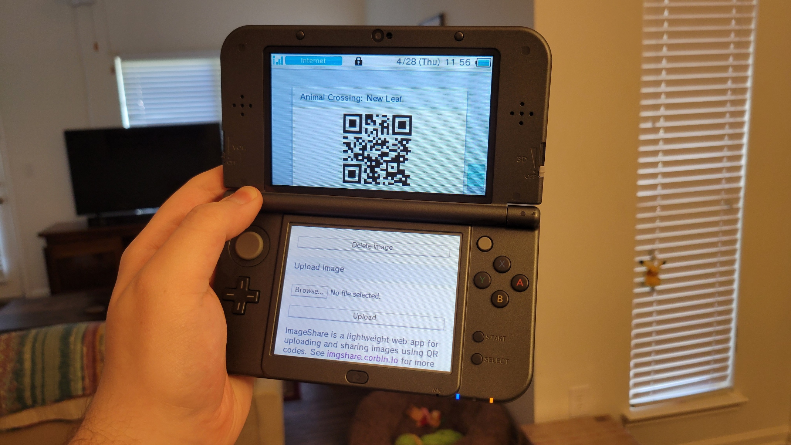
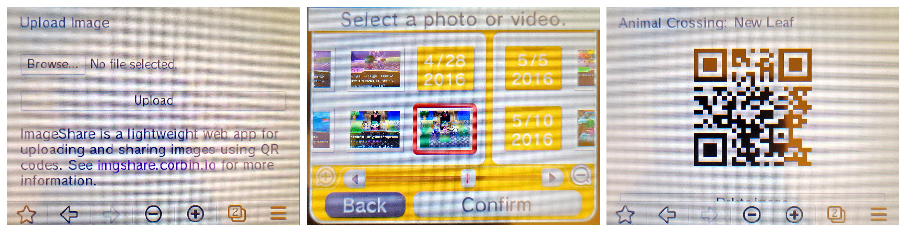
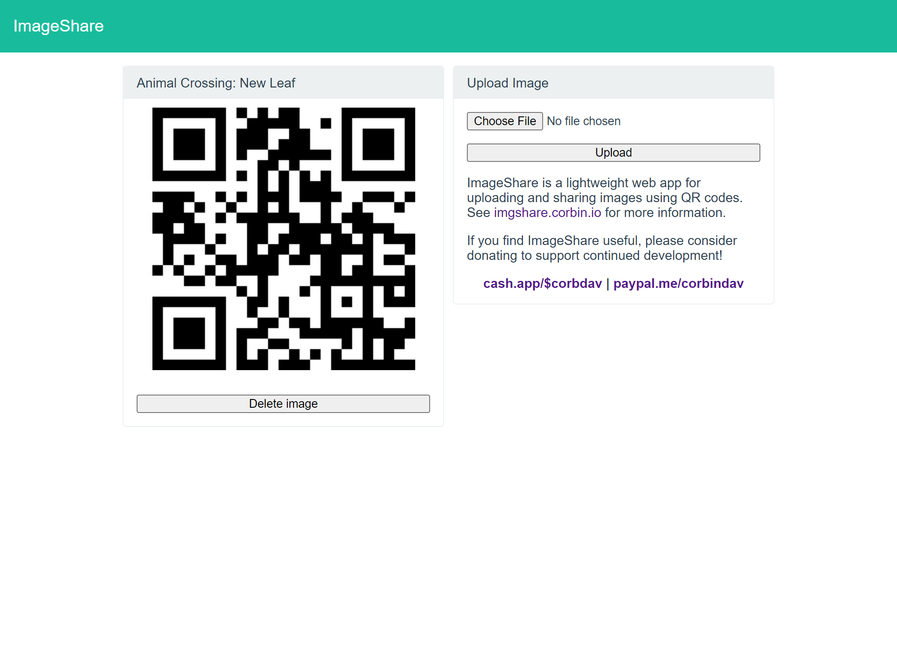
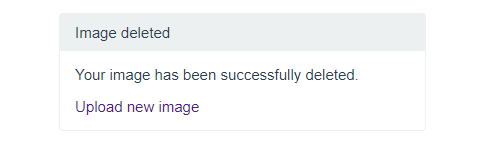

ImageShare is a lightweight web app I made for uploading images. It’s primarily designed as a replacement for the Nintendo 3DS Image Share Service, but also works with many other limited/legacy web browsers. It opens quickly, doesn’t require a login, and uploads images to the popular Imgur service. After your image is uploaded, a QR code is provided for quickly grabbing the link with any phone or tablet with a camera.

In comparison, Nintendo’s Image Share service is slow and requires logging into Twitter or Facebook on the 3DS itself. As Nintendo starts shutting down the last remaining online services for the 3DS, I’ve been working on improving ImageShare, and I’ve now rolled out a major update.
ImageShare used to have a dual-display mode on the 3DS Browser, where the upload buttons would be on the bottom screen, and the QR code for scanning would appear on the top screen. However, that layout made it difficult to add more text and controls, and also didn’t behave the same between the regular 3DS and New 3DS. ImageShare now has a regular vertical layout across all browsers, but on the 3DS, you still don’t have to scroll to see the QR code after uploading.

This is also the first ImageShare release to display correctly on regular 3DS browsers without needing to zoom in (as if it was an unoptimized desktop site). I didn’t actually know until working on this update that the original 3DS needs a specific viewport size, so ImageShare now detects if you’re using an old 3DS and adjusts accordingly.
I’ve also worked on adding basic support in ImageShare for larger/wider screens, so the web app doesn’t look quite as out of place on desktops and browsers for home consoles (like the Nintendo Wii U). There’s a simple two-column layout on large screens, with the QR code displayed on the left and the upload form on the right.

There’s a lot more work that could be done to make ImageShare a better experience on larger screens, but at least it doesn’t look terrible now.
ImageShare still works mostly the same as it did before: uploading an image will submit it to Imgur and give you a QR code to scan. However, if you’re on a device that can actually load Imgur’s website (read: not the 3DS), you can now also click or tap the QR image to open the Imgur page in a new tab without having to scan it. The name of the game (if the image is from a 3DS game) is also now displayed above the QR code, and just like before, the game title is added to the Imgur post.

The other new feature is that you can now delete images after uploading them, by clicking the ‘Delete image’ button under the QR code. This is helpful if you just want to use ImageShare to copy an image to another device, and don’t want it to stay on Imgur’s servers.
You can learn more about ImageShare, including how to access it on the 3DS Browser, from imgshare.corbin.io.
ImageShare is still fully open-source under the GPLv3 license, and anyone can host their own version with the Heroku platform.